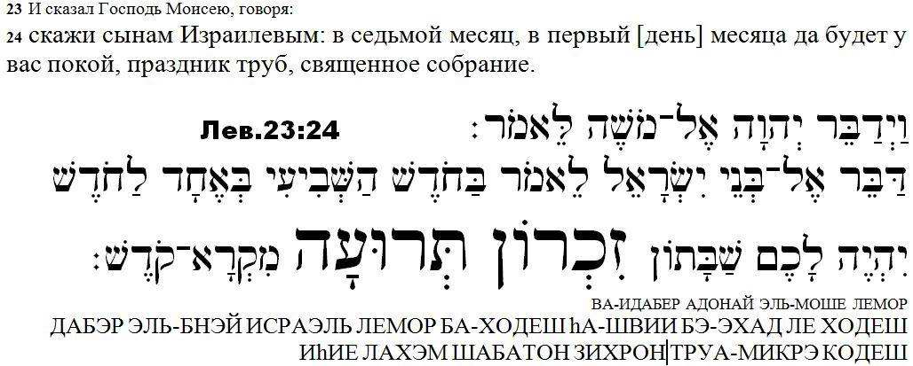
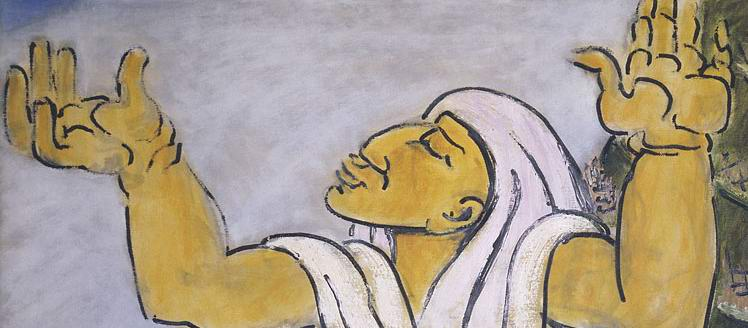

МОЖЕТ ли женщина трубить В ШОФАР?
Периодически то тут, то там возникает вопрос, может ли женщина … трубить в шофар? То, что она на это способна – это не вопрос (женщины, на мой взгляд, могут делать это лучше многих из нас...
Может ли женщина трубить в шофар?

Периодически то тут, то там возникает вопрос, может ли женщина ... трубить в шофар? То, что она на это способна – это не вопрос (женщины, на мой взгляд, могут делать это лучше многих из нас, можете убедиться на этом потрясающем видео.
Не вопрос также и то, что она уже это делает не только уединившись или в закрытом помещении, но и выходя на открытые пространства и даже на крыши домов. Обратите внимание, в шофар-флешмобах (представьте себе, есть и такие) основная масса участников - женщины.
Порой мне кажется, что женщина может гораздо больше, чем мужчина. Т.е. в способности женщины трубить, никакого сомнения нет. Активностью своей они также часто превосходят мужчин в деле сем.
Где-то я прочитал, что Талмуд (трактат «Рош а-Шана») видит в звуках шофара тревогу мужчины и плач женщины. Означает ли это, что мужчины и женщины слышат шофар по-разному?
Исследования ученых говорят о том, что мужчины слушают (воспринимают информацию) одним полушарием, а женщины двумя. Следует ли из этого, что мы слышим шофар по-разному?
Впрочем, есть раввины, настаивающие на том, что и мужчины, и женщины слушают и слышат шофар так, как они готовы его воспринять. Нет гендерного различия в области восприятия звуков шофара. Важно услышать звуки, воспринять глубину традиции, понять смысл праздника Трубления шофара (Рош а-Шана), осознать силу раскаяния.
Но два полушария до сих пор не дают мне покоя...
Женщина – ШОФЁР – это вполне нормальное явление (кроме Ирана, кажется).
А вот женщина и ШОФАР – проблема...
Тора не дает однозначного запрета на то, чтобы женщина бралась за сей предмет. Сказать по-честному, – я не знаю как ответить на этот вопрос. Не ожидайте от меня ответа.
Не знаю всех подробностей галахи на этот счет. Знаю только однозначно, что у Котеля (Стены плача), если вы женщина, вам не позволят читать свитки Торы вслух, повязывать тфилин, надевать талит и трубить в шофар. Дома - пожалуйста!

Раньше на этот вопрос я ответил бы быстро и однозначно – не может, в смысле – не надо бы.
Сегодня я затрудняюсь однозначно ответить на этот вопрос.
Во-первых, именно женщина научила меня извлекать звуки из этого инструмента. Причем, сделала это совершенно замечательно, не имея при себе шофара, просто на руках. Сложила руку определенным образом, и имитируя шофар и показала, как управлять губами и как извлекать звук, предложив нехитрое упражнение. Надо признать, сама эта замечательная женщина не практикует публичное трубление в шофар. Она считает, что эта ответственность возложена прежде всего на мужчин. А если есть возможность такому мужчине подсобить минимально разобраться с этим инструментом – пожалуйста, она готова.
Сам факт того, что женщины (как мне кажется, больше в США) взялись за шофар, не есть еще доказательство правильности такого положения вещей, а лишь констатация факта, что он - на лицо.
Я не имею в виду различные феминистические движения в их борьбе за всякие разные свободы. В т.ч., например, ходить по улицам голышем, или по крайней мере без верха. Запреты на этот счет феминистками понимаются как средневековое мракобесие. Поэтому феминисток, с их продвинутостью, оставим таки в покое. Не о них речь.
Были в еврейской истории женщины воительницы – Двора (синод. - Девора), например. Правда, сама она понимала неловкость такого положения.

В некоторых деноминациях есть женщины – пасторы. В православии просто объясняют, почему женщина не может быть священником при храме. Священник де – образ Спасителя. А Он был мужчина.
На мой взгляд не все так однозначно. Библия представляет нам прообраз Мессии, Избавителя в т.ч. в лице еврейской женщины по имени Адаса (она же царица Эстер). Богу возможно всё.
Израиль – единственная в мире страна, где женщины подпадают под закон о всеобщей воинской повинности. Больше того, есть в израильской армии отдельные военные специальности, где женщины оказываются более эффективными и более приспособленными сделать то, что для мужчины - сложность.
В только что отгремевшей войне «Цуг эйтан» девушка командовала рассчетом легенарного «Кипат а-барзель» (железного купола) и получила наргараду за успешные действия по защите мирного населения.

Один из лучших учителей Библии, которого я слышал живьем – женщина.
И потом, если нет подходящего мужчины, то, видимо складывается ситуация, когда кто-то (даже если это женщина) вынужден поднять перчатку. И если заповедь Господня гласит: «Воструби шофаром на Сионе», а близ лежащий (в смысле стоящий) мужчина трубить не хочет, или из его шофара разносится едва различимый, извините, пукающий звук, то рак на горе таки свистит и женщина берет ответственность на себя.
Однажды я делал семинар для группы верующих из Соединенных Штатов. Большая часть членов этой группы были дамы, причем в возрасте. Всплыл вопрос, обсуждаемый нами сегодня. Не успел я открыть рот, как посыпались свидетельства. Вот одно из них:
«По долгу службы одна из дам регулярно бывала в одном из районов Лос-Анджелеса. А славен этот район был тем, что процент преступности, наркомании и пр. в нем был повышенный (много выше среднего). И вот однажды (по словам рассказчицы) она получила откровение - подняться на одну из крыш высоких зданий, с которого весь район был как на ладони. Сказано – сделано. Она стала подниматься на крышу дома регулярно и не просто, а с шофаром. И что бы вы думали она там с ним делала? Правильно, она возвышала голос свой с крыши в молитве. А затем трубила в шофар изо всех сил.
Через месяц ей стало известно, что в районе значительно упал процент наркомании и преступности с ней связанной. Это ее естественно воодушевило, и она дала Богу обещание (свидетелей при сем не было), взяв на себя ответственность регулярно подниматься на крышу этого здания и обрушивать на район голос большого шофара (опыт показывает, женщины предпочитают большие йеменские шофары, с которыми редкий мужчина сладит). Результаты были просто потрясающими.
Со временем все как-то притупилось, дела, заботы. В общем постепенно она перестала подниматься на крышу. И довольно быстро преступность вернулась...
И тогда вновь были переговоры со Всевышним, она повинилась в нарушении своего обещания и возобновила свои обязанности трубить.»
Закончив свое свидетельство, поддержанное возгласами сестер, что так оно и было (в смысле резкого падения уровня преступности), она спросила, что я думаю, можно ли женщине трубить в шофар?
Я был слегка растерян и ответ мой был без лукавства: «Если Всевышний говорил к вам, и если вы убедились в Его поддержке и видели подтверждение словам, вами слышанным, то кто я, чтобы говорить против Бога?»

P.S.: некоторые братья, пытаясь переложить ответственность на сестер, исходят из принципа "нет во Христе ни мужчины, ни женщины". Вывод - за каждым из нас...
автор: Эфраим Калиш /TORAART/
Что скажете? Как вы относитесь к этой заповеди - ТРУБИТЬ?